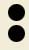

jan tschichold
lichtbildervortrag
die neue typographie
am mittwoch, 11. mai 1927, abends 8 uhr, in der aula der graphischen berufsschule, pranckhstraße 2, am marsfeld, straßenbahnlinien: 3 (haltestelle hackerbrücke), 1, 4 and 11 (haltestelle pappenheimstraße) · der vortrag wird von über hunert größtenteils mehrfarbigen lichtbildern begleitet, eine diskussion findet nicht statt
freier eintritt
veranstalter:
bildungsverband
der deutschen
buchdrucker
ortsgruppe
münchen
vorsitzender:
J. lehnacker
münchen
fröttmaninger
straße 14c